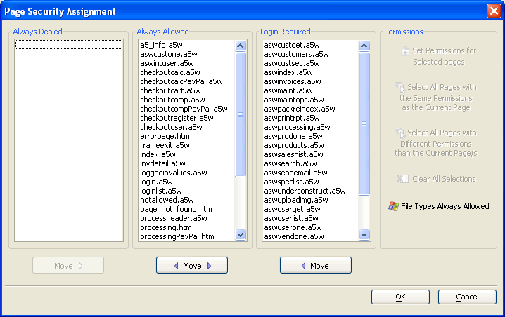

Defining Page Security - AlphaSports Web
The third step when implementing the web security in Alpha Sports Web is to define which of your pages will fall into these three categories:
pages that web users can never open (Always Denied)
pages that web users can open without login (Always Allowed)
pages that web users can open after successful login (Login Required)
The page security for each page in Alpha Sports Web can be found by selecting the page from the Web Pages list. The security category for the page and groups allowed are listed. Defining Page Security explains how to move a page to the desired category and assign a security group if login is required.

The Page Security assignments in the Page Security dialog.
Limitations
Web publishing applications only.
See Also